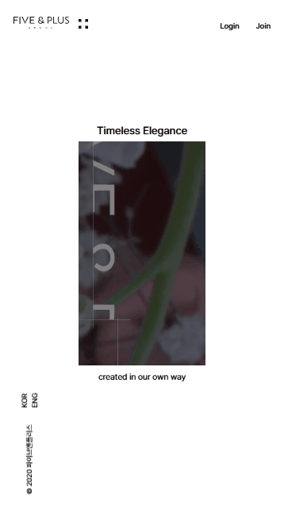
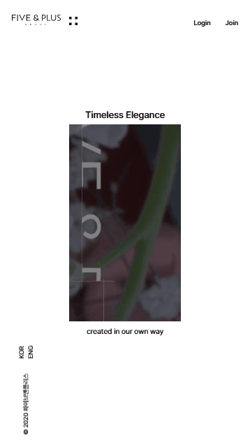

파이브앤
플러스 랜딩
https://woojin966.github.io/fiveandplus/
기간
2025.01 - 2025.02
참여도
100%
담당
퍼블리싱 & UI기획,디자인 : 퍼블리싱과 UI 기획·디자인 전반을 브랜드 정체성이 드러나는 리디자인 결과물을 완성했습니다.
사용스킬
HTML, CSS, JQUERY
1프로젝트 개요
브랜드 **‘파이브앤플러스(FIVE&PLUS)’**의 감성과 정체성을 효과적으로 전달하기 위한 리디자인 개인 프로젝트입니다. 브랜드 키워드를 중심으로 콘텐츠 흐름을 설계하고, 사용자 몰입도를 높이는 인터랙션 요소를 적용하여 웹사이트의 완성도를 높였습니다.
2주요 구현 내용
 

간결하고 직관적인 레이아웃 구조로 콘텐츠 중심의 UI 구성하였습니다.
스크롤 진행에 따라 브랜드 소개 영상의 크기를 점진적으로 조절하여 사용자의 시선을 자연스럽게 콘텐츠 중심으로 유도하였습니다.
브랜드 핵심 키워드 기반의 섹션 배치 감성과 메시지를 단계적으로 전달하는 내러티브 구조 구성했습니다.
3작업 중 어려움 & 해결법
문제
원페이지 구조 특성상 디바이스 해상도에 따라 텍스트 줄이 어색하게 바뀌거나 레이아웃이 무너지는 현상이 발생하였습니다.
영상이 스크롤에 따라 점진적으로 화면에 드러나도록 하고 싶었으나, 일반적인 transform이나 단순한 크기 조절로는 원하는 자연스러운 연출을 구현하기 어려웠습니다.
해결
텍스트 및 여백에 vw 단위를 적용하여 뷰포트 크기에 따라 유동적으로 반응하도록 구현. 이로써 줄바꿈이나 레이아웃 깨짐 현상을 최소화하고 일관된 화면 구성을 유지하였습니다.
clip-path 속성을 활용하여 영상 위에 적용된 마스크 형태를 스크롤 비율에 따라 점진적으로 확장되도록 구현. 특정 모양(예: 다각형 또는 불규칙한 형태)의 마스크가 점차 넓어지며 영상 전체가 드러나게 함으로써, 시각적으로 매끄럽고 인상적인 오픈 효과를 연출하고 사용자 몰입감을 강화하였습니다.
4결과 및 성과
브랜드의 감성과 정체성을 효과적으로 전달하는 웹 구성 완성
사용자의 콘텐츠 몰입도를 높이는 스크롤 기반 인터랙션 구현
디자인 기획부터 퍼블리싱까지 전 과정을 직접 수행하며 UI 기획 및 구현 능력 강화
5링크